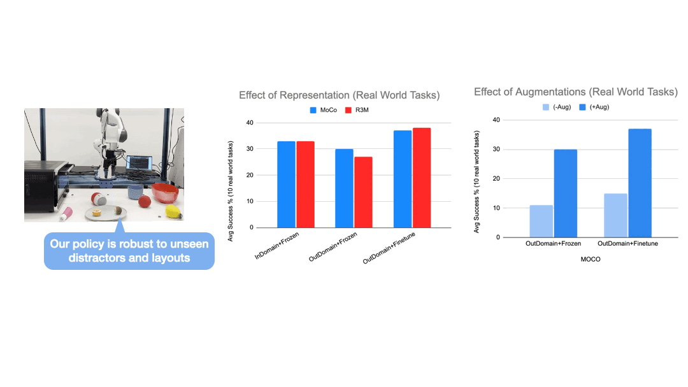
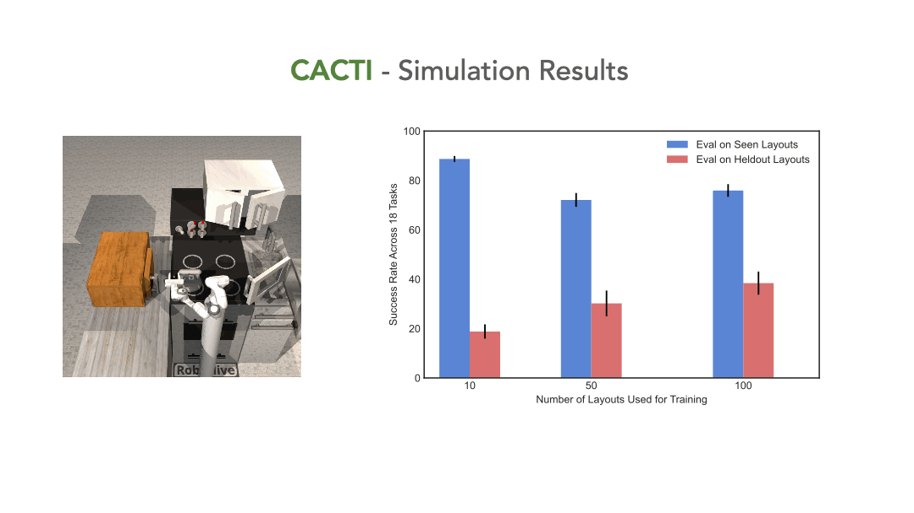

Large-scale training have propelled significant progress in various sub-fields of AI such as computer vision and natural language processing. However, building robot learning systems at a comparable scale remains challenging. To develop robots that can perform a wide range of skills and adapt to new scenarios, efficient methods for collecting vast and diverse amounts of data on physical robot systems are required, as well as the capability to train high-capacity policies using such datasets.
In this work, we propose a framework for scaling robot learning, with specific focus on multi-task and multi-scene manipulation in kitchen environments, both in simulation and in the real world. Our proposed framework, CACTI, comprises four stages that separately handle: data collection, data augmentation, visual representation learning, and imitation policy training, to enable scalability in robot learning. We make use of state-of-the-art generative models as part of the data augmentation stage, and use pre-trained out-of-domain visual representations to improve training efficiency. Experimental results demonstrate the effectiveness of our approach.
On a real robot setup, CACTI enables efficient training of a single policy that can perform 10 manipulation tasks involving kitchen objects, and is robust to varying layouts of distractors. In a simulated kitchen environment, CACTI trains a single policy to perform 18 semantic tasks across 100 layout variations for each individual task. We will release the simulation task benchmark and augmented datasets in both real and simulated environments to facilitate future research.
We setup a workspace with 10 table-top manipulation tasks and a Franka arm. Demonstration data is collected by human experts, and augmented with an in-painting variation of the stable-diffusion model to generate highly realistic objects and scene variations.
We train a single policy that can perform 10 different tasks with varying layouts and shuffling distractor objects from both training and held-out set. The zero-shot generation results produced by the in-painting diffusion model not only look visually impressive, but using them as augmented data plays a key role in enabling the policy to generalize to unseen layouts and distractors.



We have built a simulated kitchen environment that contains 18 semantic tasks and randomized layout generation. CACTI trains a single policy to perform 18 semantic tasks, across 100 layout variations for each task. The vision-based policy performs nearly as well as state-based oracles, and as we increase the number of training layouts, generalization also improves on novel layouts -- this validates the effectiveness of scaling up in robot learning that our framework sets out to achieve.

For more details, check out our paper on ArXiv
@article{mandi2022cacti,
title={CACTI: A Framework for Scalable Multi-Task Multi-Scene Visual Imitation Learning},
author={Mandi, Zhao and Bharadhwaj, Homanga and Moens, Vincent and Song, Shuran and Rajeswaran, Aravind and Kumar, Vikash},
journal={arXiv preprint arXiv:2212.05711},
year={2022}
}